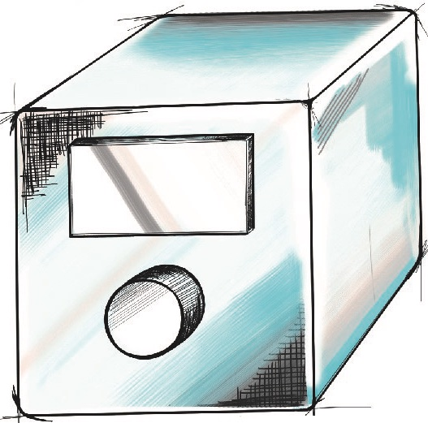

Odin Teknoloji 2017 yılında seramik sanatçılarına özel yüksek teknolojili ürünler tasarmak için kurulmuştur. Şirket kurulduğu yıl seramik fırınları için akıllı sıcaklık kontrolcüsü tasarımını tamamlamış fakat satışa sunmamıştır. Ekonomik belirsizlikler nedeniyle satış sonrası hizmetler ve garanti yönüyle eksik olarak piyasa sürmek ve müşteri memnuniyetinden feragat etmek yerine bu yolu tercih eden Odin Teknoloji, bu cihaz yerine sadece hobi kullanıcılarının değil, sanatçıların ve eğitmenlerin de severek kullanacağı minyatür çömlekçi tornası tasarımını tamamlayıp piyasaya sürmüştür. Minyatür çömlekçi tornası "Odi" ile gösterdiği başarıdan sonra şirket de kendini sektöre ispat etmiş duruma gelmiştir. Bu cihazların ar-ge süreçlerinin tamamlanmasından sonra orta boy çömlekçi tornası ve 3d seramik yazıcısı tasarımlarına eş zamanlı olarak başlamıştır. Bu cihazların çalışmaları hala devam etmektedir. Ar-ge çalışmalarına ek olarak yüksek sıcaklık fırınlarının arızalarının tespiti de firma bünyesinde yapılmaktadır.
Merhaba
Projeler
BUSK - Sıcaklık Kontrolcüsü
Seramik pişirim fırınlarındaki sıcaklık kontrolcüleri işin kontrol tarafını yeterince iyi yaparken ne kullanıcı dostu bir arayüze ne de IoT teknolojilerine sahiptir. BUSK bu iki eksikliği gidermek için ortaya çıkmış bir projedir. Kablosuz olarak web tabanlı bir arayüze bilgileri gönderebilme kabiliyeti sayesinde, acil durumlarda uzaktan durdurulabilen ve neredeyse gerçek zamanlı olarak fırın parametrelerinin takip edilebildiği bir akıllı cihazdır. Arayüzü özellikle sanatçılar ve hobi kullanıcıları için olabildiğince sade ve anlaşılır olarak tasarlanmıştır. Ekran olarak elektronik mürekkep teknolojisini kullanan ilk sıcaklık kontrolcüsüdür. Busk proje olarak tamamlanmış fakat ekonomik belirsizlikler nedeniyle ticarileşememiş bir ürün olarak rafta beklemektedir.
ODİ - Mini Çömlekçi Tornası
Türkiye'de ve dünyada büyük ilgi gören Odi, alanında kendi standartlarını belireyen bir ürün olarak hala satıştadır. Bir haftasonu projesi olarak başlayıp ticarileşen ve Odin Teknoloji'yi ayakta tutan, büyük çoğunluğu dünyanın dört bir yanına ihraç edilen, bu bağlamda rüştünü ispatlamış bir üründür. Halihazırda Etsy, Amazon ve iyzilink aracılığıyla satın alınabilir.
Clayer
3d yazıcı teknolojisinin açık kaynaklı donanım ve yazılım platformları sayesinde oldukça ucuzlamasıyla birlikte yenilikçi bazı fikirler ortaya çıktı. Bazı cesur sanatçılar bu fikirleri açık kaynaklı platformlar sayesinde hayata geçirmeyi başardılar. Clayer, bu yarı otomatize sistemlerin bir gelişmiş versiyonunu yapma fikriyle ortaya çıkmış bir proje ve geliştirilme süreci hala devam ediyor.
BODİ - Çömlekçi Tornası
Odi'nin başarı orta boy masaüstü bir çömlekçi tornası talebini de beraberinde getirdi. Tasarım süreci devam eden bu proje, Odi'nin görsel tasarım stilini devam ettirecek, yine hız ve yön ayarına sahip orta büyüklükte ve orta güç seviyesinde bir çömlekçi tornası olacak.
Sorunuz mu var?
merhaba@odinteknoloji.com 'a yazın